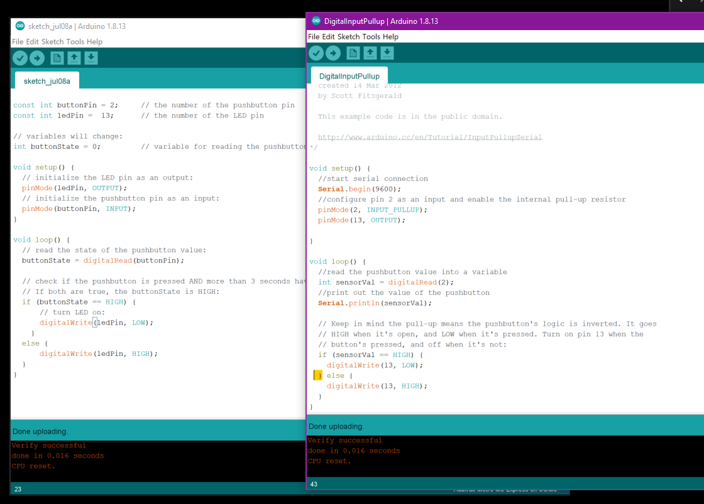

This week I learned an immense amount, but also struggled a little to get buttons to light up LEDS using conditional statements, more specifically nested for() loops. After messing around on Tinkercad and becoming best friends with my breadboard, I was finally able to get the LEDs to perform as I wanted with a button press (or two).

Blah blah blah, why did my computer die midway through making my button circuit?
I chose a video tutorial showing how to make a lamp shade and found that I finally was able to get a handle on Fusion360. While I fastidiously followed the tutorial, the video concluded with instructions on how to modify individual design steps post hoc, which turned out to be a complete game changer. Below you can see how my 3D model progressed and deviated.
I have been pondering my design for the final project and how I wish to create moving spike projections a lot. I decided to see if I could derive inspiration from others on Thingiverse and GrabCad by searching "spikes". I came across the following models, and it seems as though I'm going to have to ruminate on crystals and sea urchins to produce my design. I'm thinking that motion will be created from nitinol (muscle wire) or perhaps strings, but I need to sketch a little more to make sense of my design.